Section 6.1: Discrete Random Variables
Learning Objectives
1.Distinguish between discrete and continuous random variables.
2.Identify and interpret discrete probability distributions and probability histograms.
3.Compute the mean of a discrete random variable.
4.Interpret the mean of a discrete random variable as expected value.
5.Compute the standard deviation of a discrete random variable.
Random Variables
In chapter 1 we discussed qualitative and quantitative variables. As you may recall, quantitative variables can be categorized as discrete, or continuous. Typically, we will use discrete variables when we count something, and continuous variables are used when we measure something. In chapter 6 we will focus on discrete variables.
Definition 1
A Random Variable is a numerical measurement or count from a probability experiment. It is called “random” because the value of the variable occurs by random chance. If the outcome of the experiment is a count, it is known as a Discrete Random Variable. If the outcome of the experiment is a measure, it is a Continuous Random Variable. Usually, we use a capital letter like X to denote a random variable. Discrete random variables and continuous random variables are often denoted DRV and CRV, respectively.
We will study discrete random variables in chapter 6 and continuous random variables in chapter 7. It is important to be able to distinguish between the two types of variables.
Example 1: Discrete or Continuous Random Variable?
Determine if the random variable is discrete or continuous.
a)X is the sum of the faces of two six-sided dice that are rolled.
b)X is the number of “tails” in 10 coin flips.
c)X is the weight of a Reece’s Peanut Butter Cup.
d)X is the number of spam phone calls received in a day.
e)X is the length of time it takes to complete a task.
f)X is the number of students who show up to class.
Solution:a)Since you are counting the faces and adding them, the sum is discrete. That makes the sum of two dice a discrete random variable.
b)Since you count the number of times tails shows up in the 10 coin flips, X is a discrete random variable.
c)The weight of a peanut butter cup is a measure, so X is a continuous random variable.
d)The number of spam calls received in a day is a count, so X is a discrete random variable.
e)A length of time is a measurement, so this is a continuous random variable.
f)The number of students who show up is a count, so X is a discrete random variable.
Discrete Probability Distributions
Recall that a probability distribution is a list of each possible outcome in an experiment along with its probability.
Definition 2
A Discrete Probability Distribution is a probability distribution that lists each possible discrete outcome along with its probability. If X is the discrete random variable, then we know that
1.For each value of X, and
2.The sum of all probabilities is 1, .
Example 2: Discrete Probability Distribution
Assume that you are going to flip a coin 4 times, and let the discrete random variable X be the number of tails that you get out of the four coin flips. Make a probability distribution for X.
Solution:Theoretically, we can use tree diagrams to create the sample space for all the outcomes of flipping a coin 4 times. In section 5.1 example 3, we created the sample space for flipping a coin three times. We will add one more branch to create a sample space of 16 possible outcomes, shown in figure 6.1.
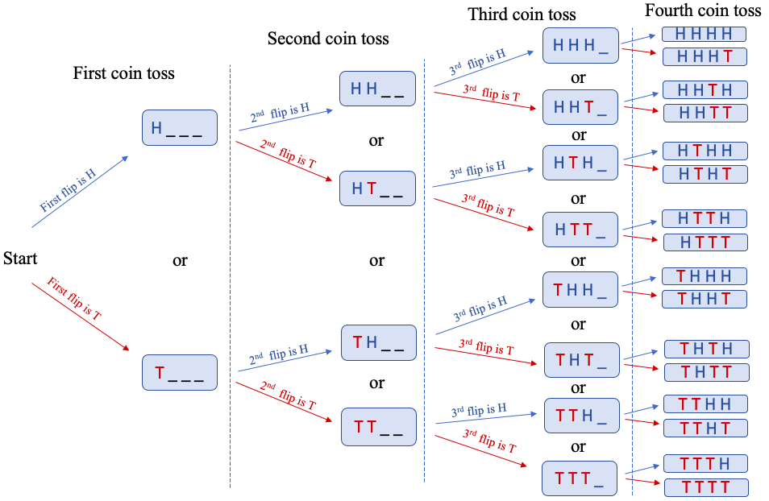
Figure 6.1: Tree diagram for 4 coin tosses.
The 16 possible outcomes are shown in figure 6.2.
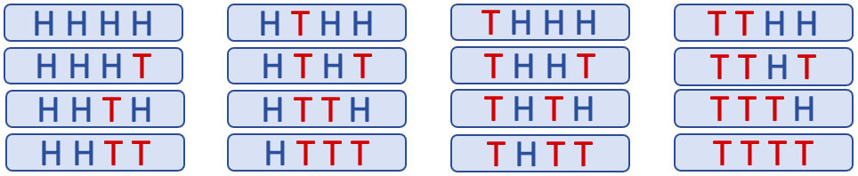
Figure 6.2: Possible outcomes of 4 coin tosses.
If we organize the sample space by the number of times tails occurred, we can calculate the probabilities needed for the probability distribution, shown in figure 6.3. There is only one way that no tails occur, so the probability that is . There are 4 different ways where one tail occurs, so the probability that is . The rest of the probabilities are computed in the same way.
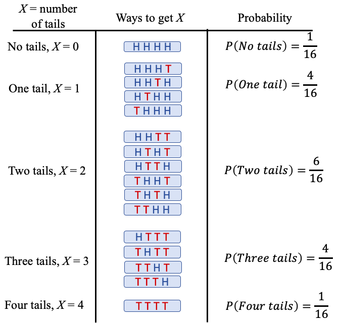
Figure 6.3: Organized samples space for counting the number of tails.
The probability distribution for DRV X = the number of tails in 4 coin flips is given in Table 1. Each of the fractions shown in figure 6.3 have been expressed as a decimal rounded to 4 places.
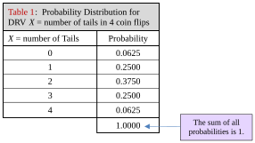
Table 1: Probability Distribution for | |
|---|---|
X = number of Tails | Probability |
0 | 0.0625 |
1 | 0.2500 |
2 | 0.3750 |
3 | 0.2500 |
4 | 0.0625 |
1.0000 | |
Note that each of the numbers listed in the probability column are between 0 and 1, and that the sum of all the probabilities is equal to 1. The column for X lists the number of tails you might get out of 4 coin flips, which could be any whole number between 0 and 4.
Once we have a probability distribution, we can use it to find probability. The next example could have been done in chapter 5, but the notation is new and might be a little confusing at first.
Example 3: Discrete Probability Distribution
Assume that you are going to flip a coin 4 times. Let the discrete random variable X be the number of tails that you get out of the four coin flips. Use the probability distribution for X in Table 1 to find the following probability.
a)
b)
c)
d)What is the most likely number of tails to observe when flipping a coin 4 times?
Table 1: Probability Distribution for | |
|---|---|
X = number of Tails | Probability |
0 | 0.0625 |
1 | 0.2500 |
2 | 0.3750 |
3 | 0.2500 |
4 | 0.0625 |
Solution:a)Using the table, . The notation is odd because of the equality inside the probability statement. It means that “the probability that there are two tails is equal to 0.375.”
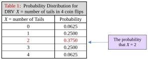
Table 1: Probability Distribution for | |
|---|---|
X = number of Tails | Probability |
0 | 0.0625 |
1 | 0.2500 |
2 | 0.3750 |
3 | 0.2500 |
4 | 0.0625 |
b)The probability that X is greater than or equal to 2 means that X is 2, or 3, or 4. As in chapter 5, the word “or” in probability tells us to add. So, we have
Table 1: Probability Distribution for | |
|---|---|
X = number of Tails | Probability |
0 | 0.0625 |
1 | 0.2500 |
2 | 0.3750 |
3 | 0.2500 |
4 | 0.0625 |
c)Obtaining fewer than 4 tails means that 0, 1, 2, or 3 tails occurred in the four coin flips. We can either add up those probabilities, or perhaps more easily, use the complement.
Table 1: Probability Distribution for | |
|---|---|
X = number of Tails | Probability |
0 | 0.0625 |
1 | 0.2500 |
2 | 0.3750 |
3 | 0.2500 |
4 | 0.0625 |
About 93.75% of the time, you will get fewer than 4 tails when you flip a coin 4 times.
d)The highest probability for any of the outcomes is 0.3750. So, it appears that getting tails twice out of 4 times is the most common occurrence, happening about 37.5% of the time. Of course, there is a 50% chance of tails on any coin flip, so obtaining two tails out of four coin flips sounds reasonable.
When we work with probability distributions, we can find complicated probabilities by addition or using complements, as we did in example 3. Table 2 is a summary of phrasing you may see and the symbolic equivalent using inequalities and the variable X.
Table 2: Inequality statement and translation in symbolic form | ||||
|---|---|---|---|---|
Inequality Statement | Symbolic form | Inequality Statement | Symbolic form | |
X is less than | X is greater than | |||
X is fewer than | X exceeds | |||
X is below | X is above | |||
X is less than or equal to | X is greater than or equal to | |||
X is no greater than | X is at least | |||
X does not exceed | X is no less than | |||
X is at most | X is no fewer than | |||
X is at maximum | X is between (exclusive) | |||
X is no more than | X is between (inclusive) | |||
Example 4: Driving to School
When driving to school a student must pass through 5 traffic lights that operate independently. For each light, there is a 40% chance that it is green. The probability distribution for X = the number of green lights encountered is shown in Table 3.
a)What is the probability that the student sees at most 2 green lights?
b)What is the probability that the student sees at least 3 green lights?
c)What is the probability that she sees between 1 and 4 green lights, exclusive?
d)What is the probability that she sees between 1 and 4 green lights, inclusive?
Table 3: The Number of Green lights out of 5 on the way to School | |
|---|---|
X = Number of Green Lights | Probability |
0 | 0.0778 |
1 | 0.2592 |
2 | 0.3456 |
3 | 0.2304 |
4 | 0.0768 |
5 | 0.0102 |
1 | |
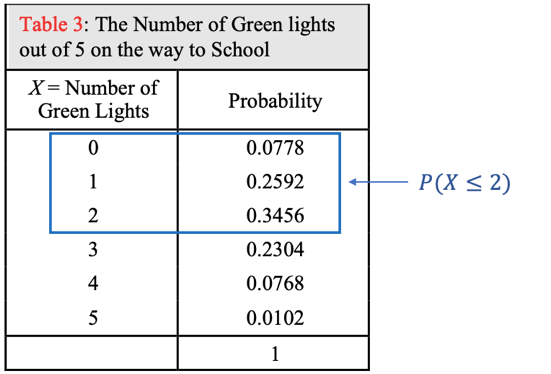
Solution:a)“At most 2 green lights” means .
So,
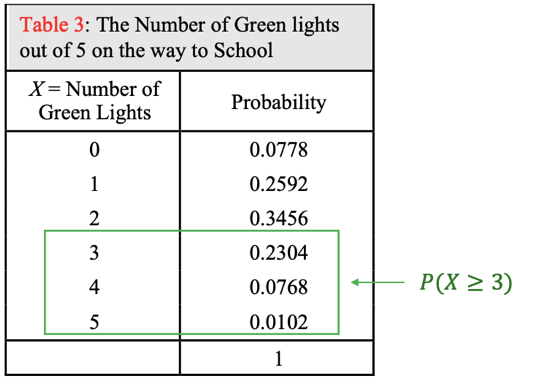
b)“At least 3 green lights” means .
So,
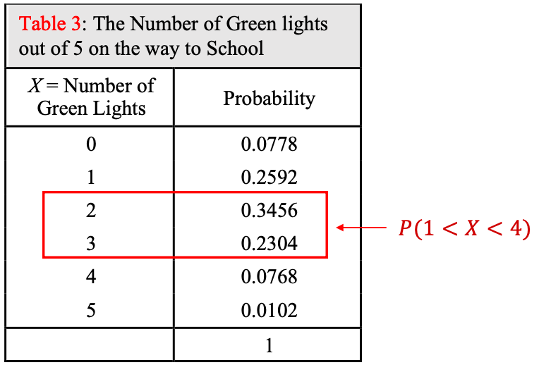
c)“Between 1 and 4 green lights, exclusive” means . So, and are NOT included in the sum, only and
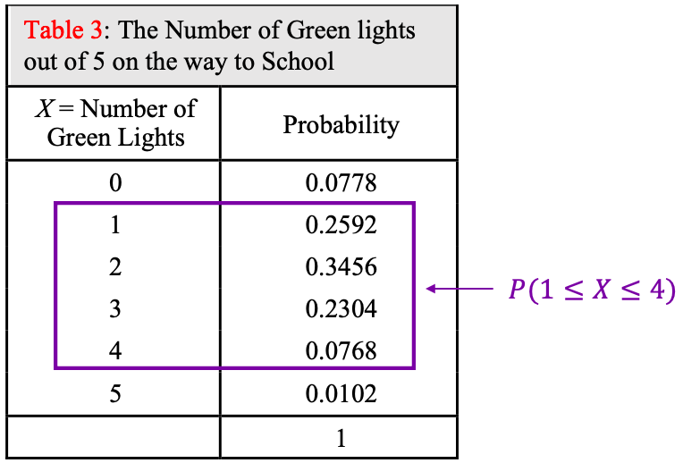
d)“Between 1 and 4 green lights, inclusive” means . So, and ARE included in the sum. The word “inclusive” tells us to include the end of the intervals.
You could also have computed this using the complement by subtracting the probability of
X = 0 and X = 5.
In chapter 2 we used relative frequency tables to create relative frequency histograms. We will treat a probability distribution for a discrete random variable the same way. Once we create the probability histogram, we can use it to describe the shape of the probability distribution.
Example 5: Probability Histogram
Assume that you are going to flip a coin 4 times, and let the discrete random variable X be the number of tails that you get out of the four coin flips. Use the probability distribution for X in Table 1 to find create a probability histogram. How would you describe the shape of the discrete probability distribution?
Table 1: Probability Distribution for | |
|---|---|
X = number of Tails | Probability |
0 | 0.0625 |
1 | 0.2500 |
2 | 0.3750 |
3 | 0.2500 |
4 | 0.0625 |
Solution:We start by marking off the horizontal X axis with the discrete numbers 0, 1, 2, 3, and 4.
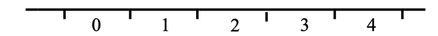
Next, we add a vertical axis scaled so that the largest probability, 0.375, will be near the top of the probability histogram. In this case, we used a maximum of 0.4. Finally, we add in bars using the probability for the height of each bar. See figure 6.4.
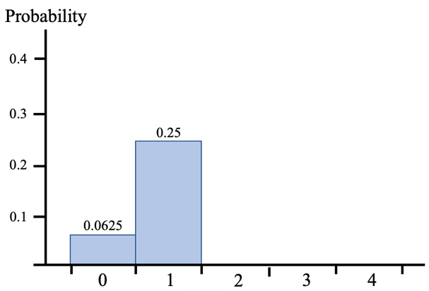
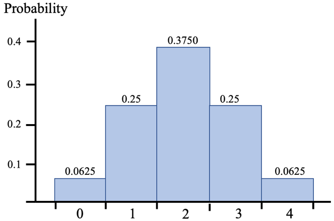
Figure 6.4: Creating a probability histogram for the number of tails when flipping a coin 4 times.
The discrete probability distribution appears to be bell-shaped. The mean appears to be about 2, and most of the time the number of tails is between 1 and 3, inclusive.
Calculating the Mean and Standard Deviation for Discrete Random Variables
A discrete random variable can be described the way we described data in chapters 2 and 3. Specifically, we will describe a probability distribution by addressing the following three characteristics:
•Center- based on the probability distribution, what is the most typical or expected outcome?
•Variation- how much will the outcomes in the probability distribution vary?
•Shape of the distribution- is the probability histogram skewed or bell-shaped?
In the last example we were able to describe the shape by noting that the probability histogram looks reasonably bell-shaped. It appears that 2 is right in the middle, so that is a good guess for the mean. And it doesn’t appear to vary a lot, with bulk of the probability between 1 and 3 inclusive. But can we apply the formulas from chapter 3 to find the mean and standard deviation of a discrete random variable? The answer is... yes!
Definition 3 Mean and Standard Deviation for a Discrete Random Variable
Assume that X is a discrete random variable.
1.The mean value of DRV X is found using the formula
2.The standard deviation of DRV X is found using either
We won’t derive the formulas but will show how they can be used.
Example 6: Finding the Mean and Standard Deviation of a DRV
Find the mean and standard deviation of the discrete random variable X = the number of tails in four coin flips, as seen in Table 1.
Table 1: Probability Distribution for | |
|---|---|
X = number of Tails | Probability |
0 | 0.0625 |
1 | 0.2500 |
2 | 0.3750 |
3 | 0.2500 |
4 | 0.0625 |
Solution:To find the mean, we can use the formula directly. That will give us the following:
So, the mean is 2, which is what looks to be the middle of the probability histogram from figure 6.4. Figure 6.5 shows the probability histogram with the mean added. Notice that the mean is right in the middle, as expected.
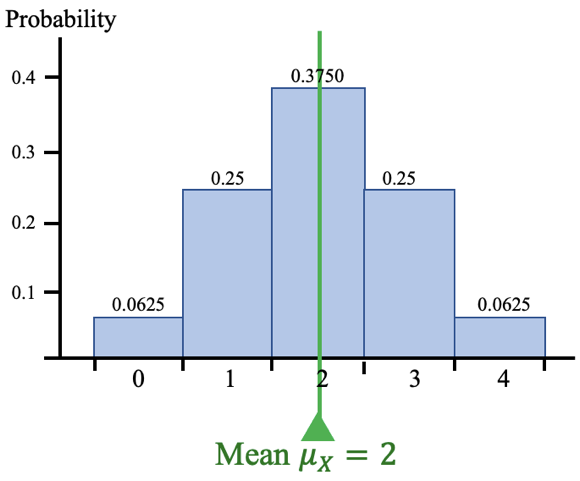
Figure 6.5: Probability histogram for the number of tails with the mean.
To find both the mean and standard deviation by hand, it can sometimes be helpful to organize the probability distribution into a table of columns. For the mean, add a column to the right of the probability column and call it . Then, multiply each of the X values by its associated probability and write the result in the third column. The sum of that column is the mean. See figure 6.6.
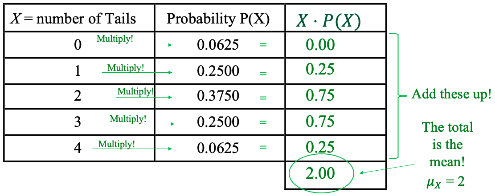
Figure 6.6: Using a table to calculate the mean.
To find the standard deviation, we will add two more columns to the table in figure 6.6. The formula for standard deviation for a discrete random variable is . We have already calculated the mean . Next, we need to know the value for . First, we will compute , then multiply by , and last find the sum (shown in purple).
X = number of Tails | Probability P(X) | |||
|---|---|---|---|---|
0 | 0.0625 | 0.00 | 0 | 0.00 |
1 | 0.2500 | 0.25 | 1 | 0.25 |
2 | 0.3750 | 0.75 | 4 | 1.50 |
3 | 0.2500 | 0.75 | 9 | 2.25 |
4 | 0.0625 | 0.25 | 16 | 1.00 |
2.00 | 5 | |||
Finally, plugging these values into the formula, we arrive at
So, the mean of this discrete random variable is 2, and the standard deviation is 1. That tells us to expect to get two tails, on average, each time we flip a coin 4 times. The standard deviation equal to 1 tells us to expect to be within 1 tail of the mean, most of the time. Taken together, the mean and standard deviation tell us we should see between 1 and 3 tails, most of the time. As we have seen from the probability distribution, you should get between 1 and 3 tails, inclusive, 87.5% of the time that you flip a coin 4 times.
Example 7: Rolling a Six-sided Die
Make a probability distribution, histogram, and find the mean and standard deviation for the discrete random variable X = the result of rolling a six-sided die. Describe the probability distribution in terms of center, variation, and shape.
Solution:There are 6 possible outcomes when you roll a six-side die, and each one is equally likely. So, the probability for any of the results is 1/6. The probability distribution is shown in Table 4.
Table 4: Results of a Six-sided Die Roll | |
|---|---|
X = face of die | Probability |
1 | 1/6 |
2 | 1/6 |
3 | 1/6 |
4 | 1/6 |
5 | 1/6 |
6 | 1/6 |
1 | |
The probability histogram looks like a rectangle, since all the probabilities are the same. This is an example of what is called a uniform distribution, so named because the probabilities are “uniformly the same for each outcome”. The probability histogram is shown in figure 6.7.

Figure 6.7: Probability histogram for rolling a six-sided die.
To find the mean and standard deviation, we add to Table 4, as we did in example 6.
Table 4: Results of a Six-sided Die Roll | ||||
|---|---|---|---|---|
X = face of die | Probability | |||
1 | 1/6 | 1/6 | 1 | 1/6 |
2 | 1/6 | 2/6 | 4 | 4/6 |
3 | 1/6 | 3/6 | 9 | 9/6 |
4 | 1/6 | 4/6 | 16 | 16/6 |
5 | 1/6 | 5/6 | 25 | 25/6 |
6 | 1/6 | 6/6 | 36 | 36/6 |
1 | 21/6 = 3.5 | 91/6 | ||
Using the formulas for the mean and standard deviation of a discrete random variable, we find that the mean number showing on a six sided die is
and the standard deviation of the number showing on a six-sided die is
The probability distribution for the roll of a six-sided die has the following characteristics.
•Center- The mean, or average roll is 3.5.
•Variation- The standard deviation is approximately 1.708.
•Shape- The probability distribution is uniform, not bell-shaped.
Now, how can technology help us with this process? Can we use STATBELT Utility- the Statistical Basics Exploratory Learning Tool (opens in a new tab) to do any of this work? Luckily, the answer is yes!
STATBELT Utility- Discrete Probability Distributions
To use STATBELT Utility to find probability, the mean, or the standard deviation of a discrete random variable with a known probability distribution, follow these steps.
1.Type the values of the discrete random variable in one column of the spreadsheet, and type a name for the column in its heading.
2.In the next column, type the probability for each value. Name the probability column “Probability”.
3.Select Calculators → Custom Discrete Probability Calculator.
4.For “X values in” choose your discrete random variable. For “Probabilities in” choose “Probability”.
5.Under “Find,” choose the inequality you need and type the value of x. Choose P(a ≤ X ≤ b) for a probability between two values.
The calculator updates as you make each choice. It gives the mean, the standard deviation, and a probability histogram, and it shades the bars for the probability you choose.
We will now revisit examples 3 and 4 using STATBELT.
Example 8: Discrete Probability Distribution
Assume that you are going to flip a coin 4 times. Let the discrete random variable X be the number of tails that you get out of the four coin flips. Use STATBELT and the probability distribution for X in Table 1 to find the following probability.
a)
b)
c)
d)Find the probability that there are between 1 and 3 tails, inclusive.
e)Find
Table 1: Probability Distribution for | |
|---|---|
X = number of Tails | Probability |
0 | 0.0625 |
1 | 0.2500 |
2 | 0.3750 |
3 | 0.2500 |
4 | 0.0625 |
Solution:First, open STATBELT Utility and type 0, 1, 2, 3, and 4 in the first column of the spreadsheet, and the probabilities in the next column. Name the columns “Number of Tails” and “Probability”.
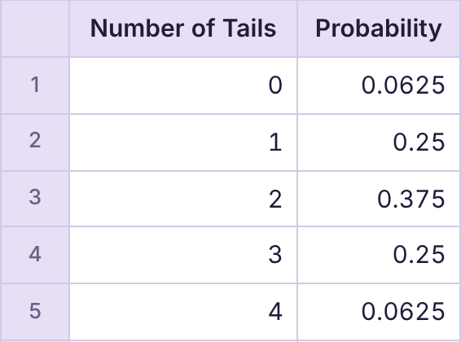
Next, select Calculators → Custom Discrete Probability Calculator.
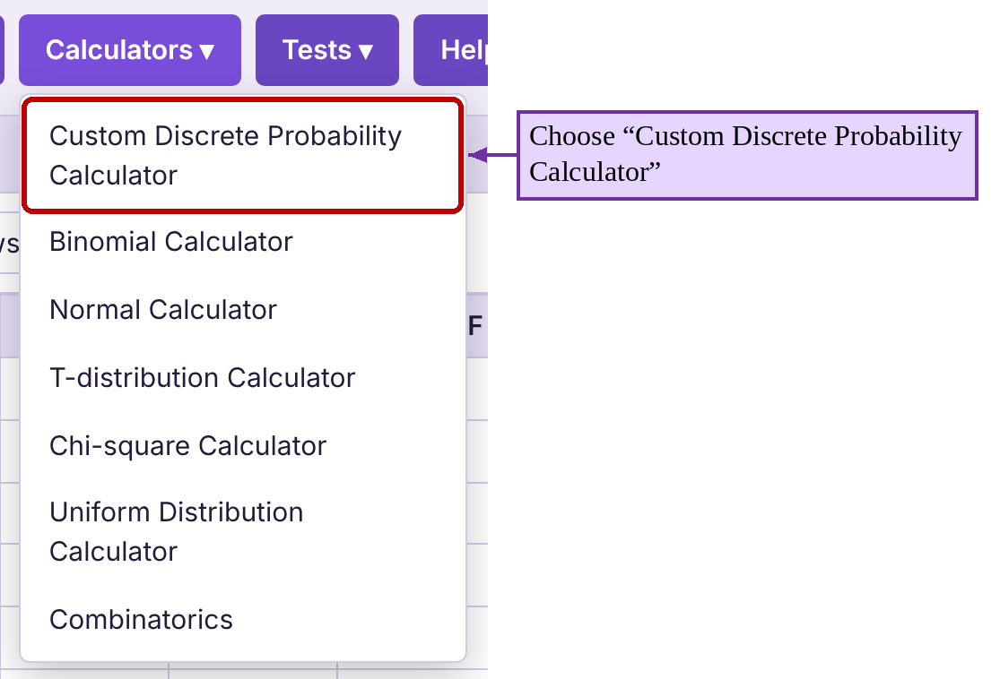
Choose “Number of Tails” for “X values in” and “Probability” for “Probabilities in.”
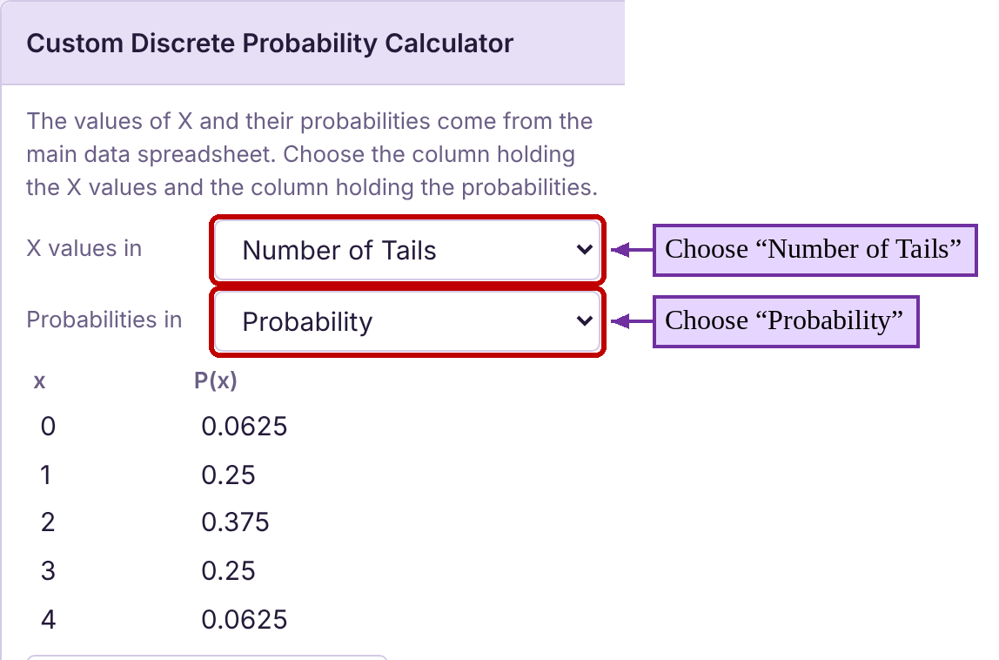
The custom calculator appears as soon as both columns are chosen. There is no button to click.
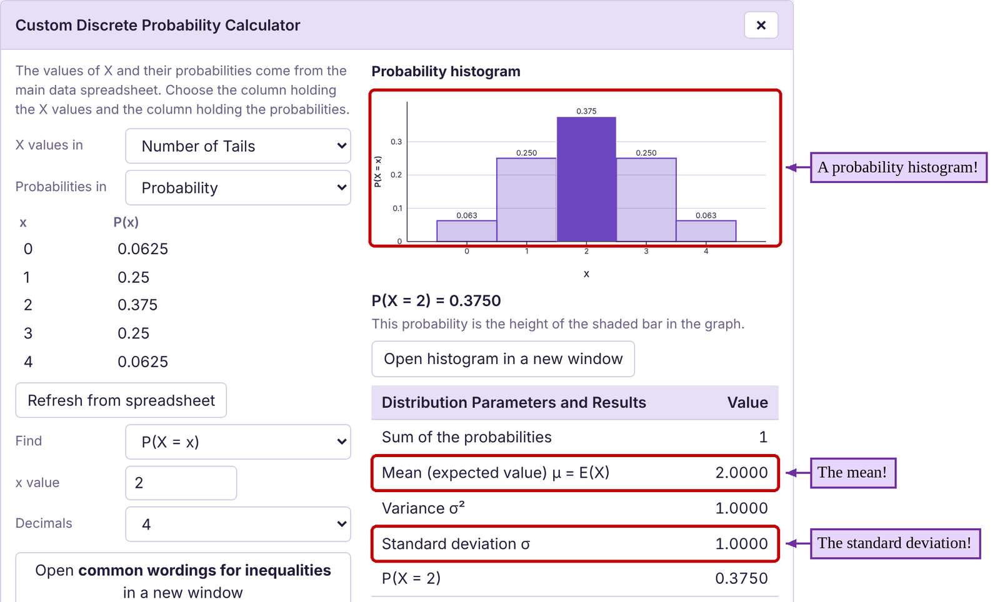
Note that the mean and standard deviation have been calculated for you. The mean is shown to be 2, and the standard deviation has been calculated to be 1. There is also a probability histogram, with one bar for each value of X. The height of each bar is the probability of that value. To use the calculator to find the probabilities of different events, we can change the inequality under “Find” and the number or numbers we compare to X. To see a larger histogram, click “Open histogram in a new window.”
a)To find , set the inequality to by choosing P(X = x) under “Find,” and type 2 for the x value. We could have read this from the table, but it is good to see that the calculator tool agrees. Note that the bar at 2 is shaded dark purple. When using the tool, the shaded bars correspond to the probability you select.
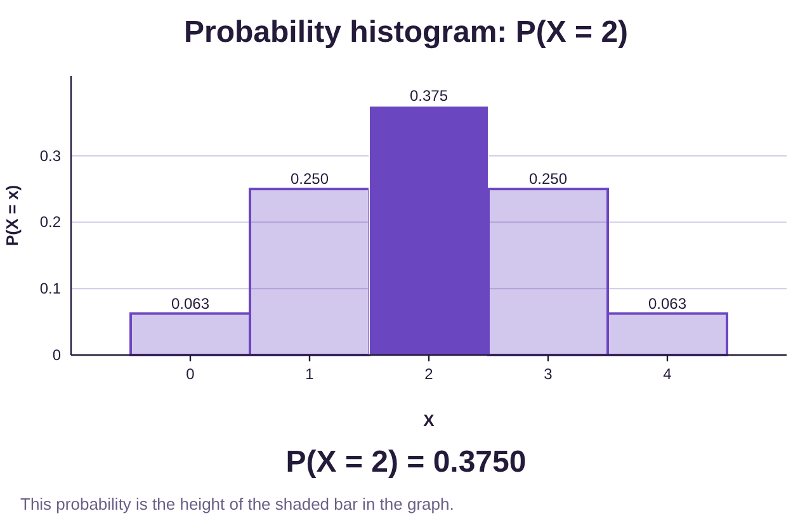
b)To find the probability that X is greater than or equal to 2, set the inequality to by choosing P(X ≥ x), and leave the x value at 2. Here the bars for 2, 3, and 4 are shaded, and the probability is 0.6875, agreeing with our previous work.
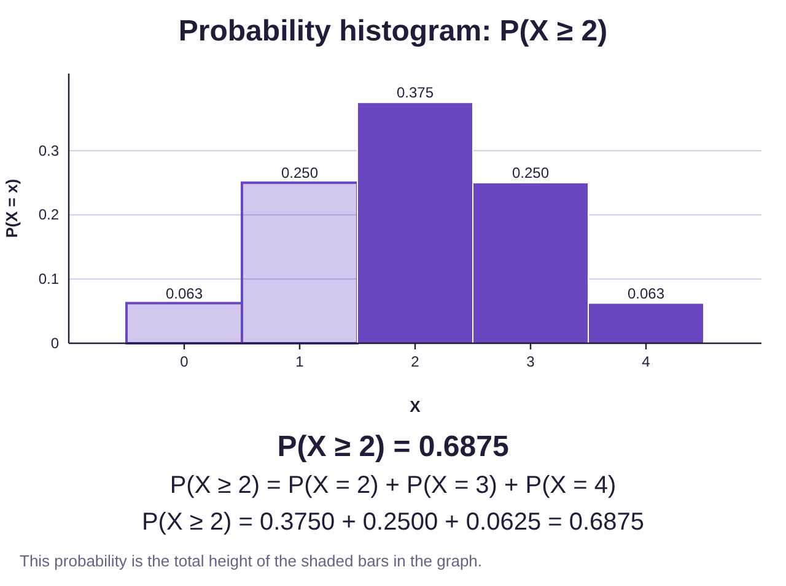
c)To find the probability of fewer than 4 tails, set the inequality to by choosing P(X < x), and change the x value to 4. The bars that are “fewer than 4” are shaded, and the probability is 0.9375.
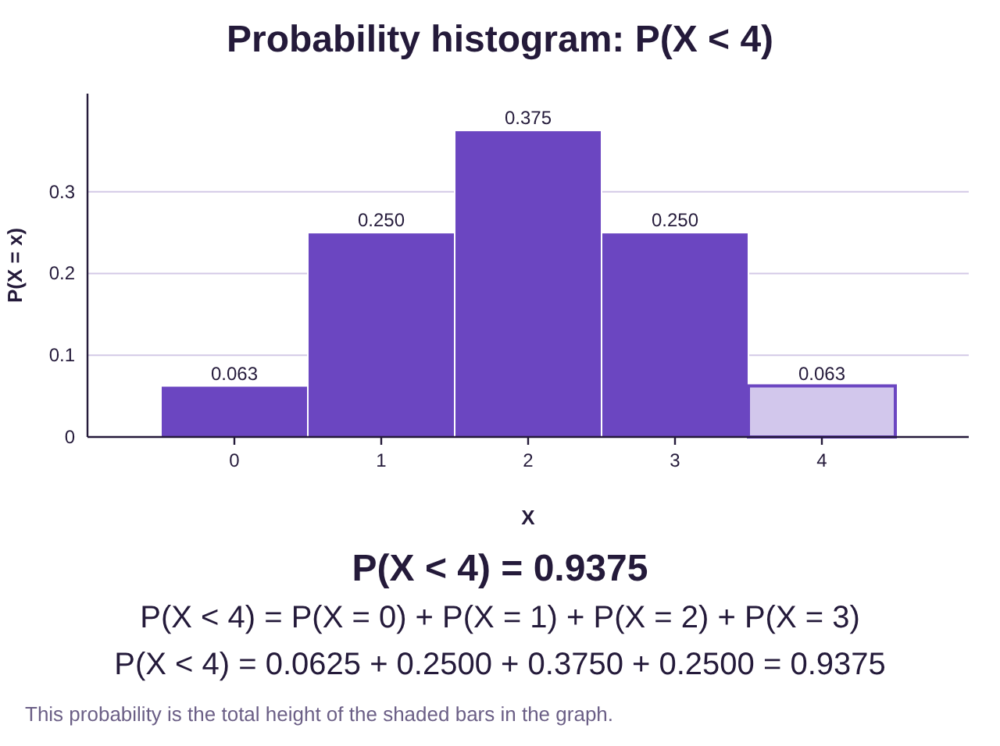
d)To find the probability that the number of tails is between 1 and 3, inclusive, we use the “between” setting. We want to find , so choose “P(a ≤ X ≤ b)” under “Find.” Notice that the inequalities for between are always . Type 1 for the lower value a and 3 for the upper value b. The result is .
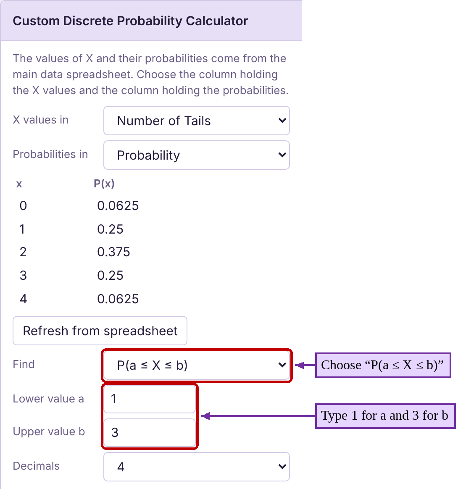
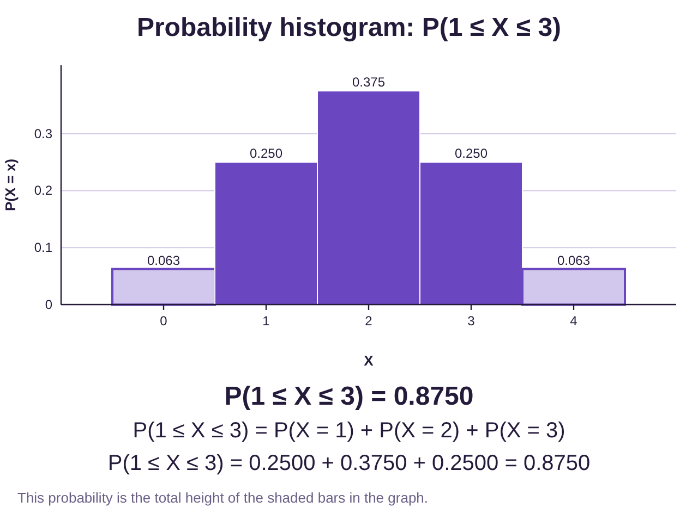
e)To find we can use the “between” setting, P(a ≤ X ≤ b), but there is no option to change it to “ < X < ”. So, in this case, we need to interpret using the less than or equal to inequalities, The numbers that are between 1 and 4 are X = 2 and X = 3. Type 2 for a and 3 for b. The result is .
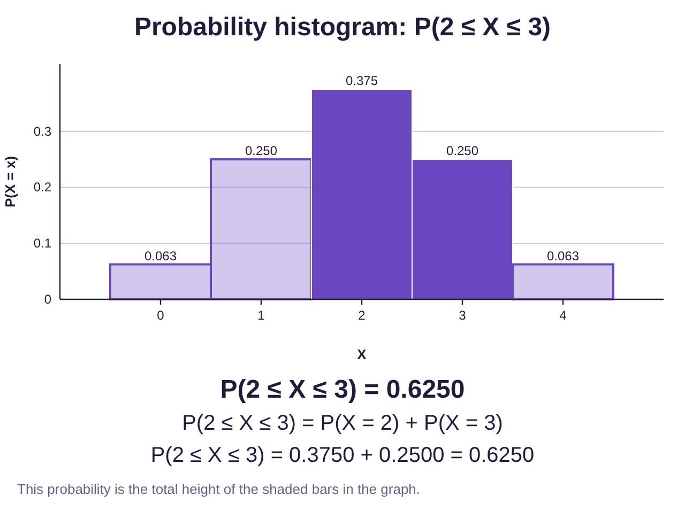
Example 9: Driving to School Using STATBELT!
When driving to school a student must pass through 5 traffic lights that operate independently. For each light, there is a 40% chance that it is green. The probability distribution for X = the number of green lights encountered is shown in Table 3.
a)Describe and interpret the probability distribution.
b)What is the probability that the student sees at least 3 green lights?
c)What is the probability that she sees between 1 and 4 green lights, inclusive?
Table 3: The Number of Green lights out of 5 on the way to School | |
|---|---|
X = Number of Green Lights | Probability |
0 | 0.0778 |
1 | 0.2592 |
2 | 0.3456 |
3 | 0.2304 |
4 | 0.0768 |
5 | 0.0102 |
Solution:First, open STATBELT Utility and type 0, 1, 2, 3, 4, and 5 in the first column of the spreadsheet, and the probabilities in the next column. Name the columns “Number of Green Lights” and “Probability”.
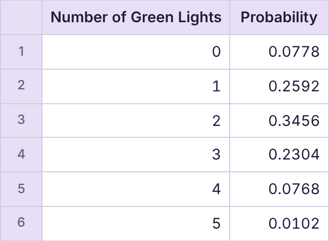
Select Calculators → Custom Discrete Probability Calculator, and choose “Number of Green Lights” for “X values in” and “Probability” for “Probabilities in.”
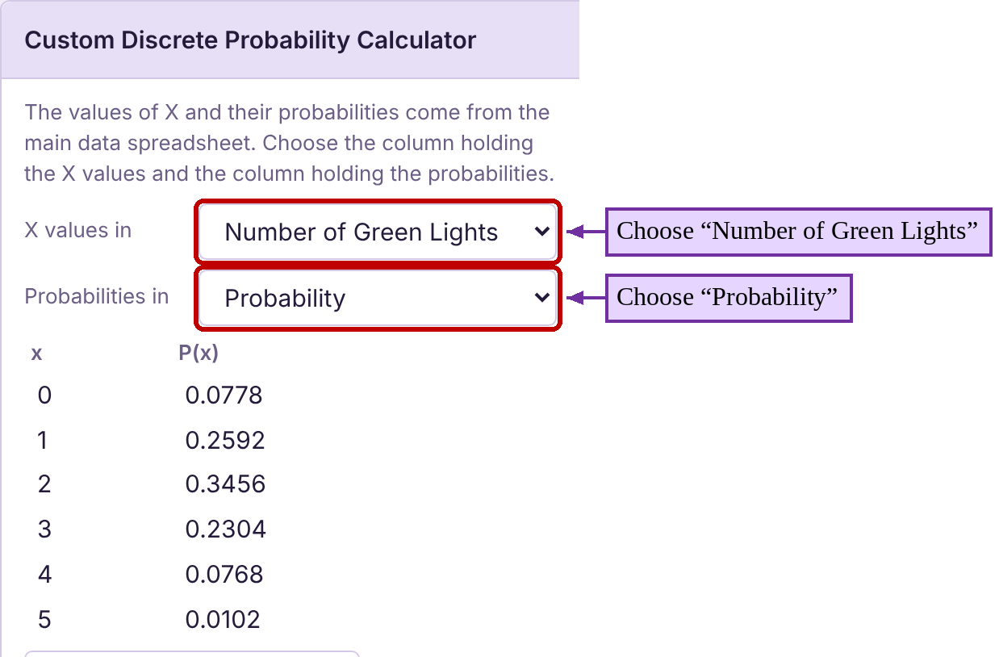
The custom calculator is shown in figure 6.8.
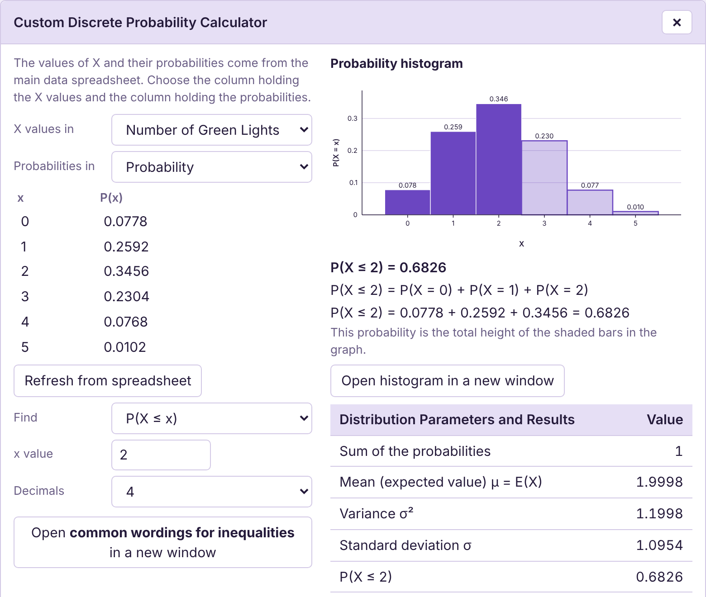
Figure 6.8: The custom calculator in STATBELT Utility.
a)To describe the distribution, we identify the center, variation, and shape.
•Center- STATBELT has calculated the mean to be . The student should expect to see 2 green lights, on average, while driving to school.
•Variation- The standard deviation is . That means that the student should expect to see 2 green lights, plus or minus 1.1, most of the time. Effectively, this means she will most often see between 1 and 3 green lights on a trip to school.
•Shape of the distribution- The probability histogram appears close to bell-shaped, but with a slight skew to the right.
b)Under “Find,” choose P(X ≥ x) (the inequality “”), and type 3 for the x value. The probability she will see at least three green lights is .
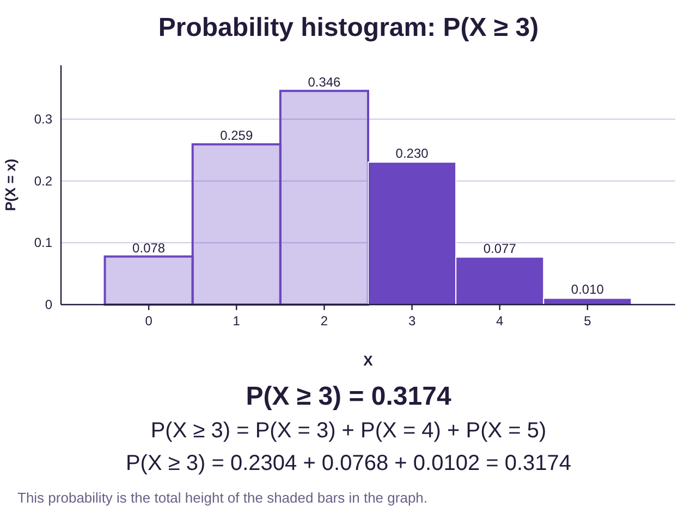
c)Choose P(a ≤ X ≤ b) under “Find,” and type the endpoints 1 and 4 for a and b. The probability she will see between 1 and 4 lights, inclusive, is .
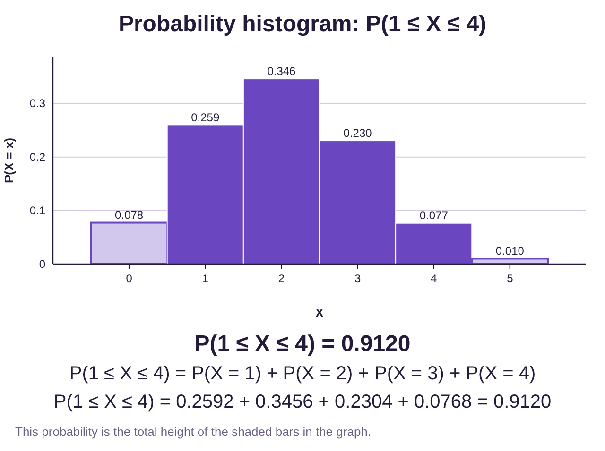
Example 10: Steph Curry 3-Point Shots 2016-2017
Steph Curry is a popular attraction in the National Basketball Association, playing for the Golden State Warriors. He holds the record for most 3-point shots made in NBA history.
The probability distribution in Table 5 gives the probability for the discrete random variable X = the number of 3-point shots made per game by Steph Curry during the 2016-2017 season.
a)If you attended a game, how many 3-point baskets would you expect him to make?
b)If you randomly chose one game, what is the probability that he made at least 5 three-point shots?
c)Would it be unusual to see him make 10 or more three-point shots?
Table 5: The Number of Three-point shots made per game by Steph Curry during the 2016-2017 season | ||||||||||||
|---|---|---|---|---|---|---|---|---|---|---|---|---|
3-pointers | 1 | 2 | 3 | 4 | 5 | 6 | 7 | 8 | 9 | 10 | 11 | 12 |
Probability | 0.062 | 0.083 | 0.178 | 0.135 | 0.167 | 0.105 | 0.104 | 0.094 | 0.031 | 0.021 | 0.01 | 0.01 |
Solution:a)To describe how many 3-point shots you expect him to make, we will compute the mean and standard deviation of DRV X = Number of 3-point shots made. You can either type the data into two columns of the STATBELT spreadsheet or copy the Table 5 data (opens in a new tab) and paste it into STATBELT. Then select Calculators → Custom Discrete Probability Calculator, and choose “3-pointers” for “X values in” and “Probability” for “Probabilities in.” The custom calculator is shown in figure 6.9.
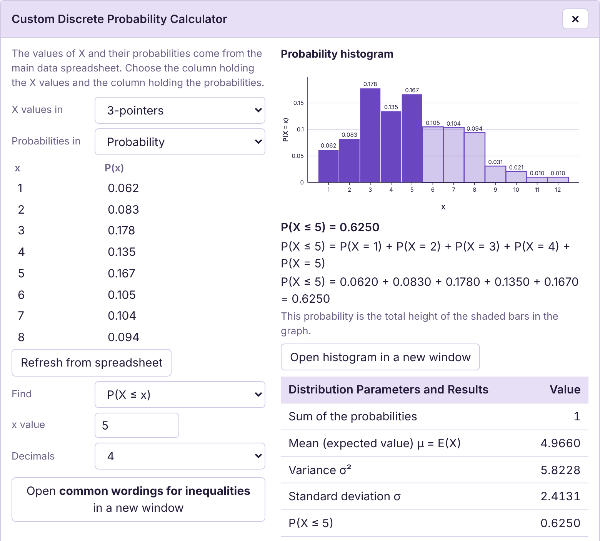
Photo by Markus Spiske (opens in a new tab) on Unsplash (opens in a new tab)
Figure 6.9: Custom calculator for Steph Curry 3-point shots.
The mean number of 3-point shots he makes is . So, he makes 5 three-point shots per game, on average. The standard deviation is . This can be interpreted as “most of the time, Steph Curry will make 5 plus or minus 2.4 three-point shots in a game.” Thus, most of the time he will make between 3 and 7 shots, inclusive. If you attend a game in which he plays, he will likely make between 3 and 7 three-point shots.
b)The likelihood he makes at least 5 shots is .
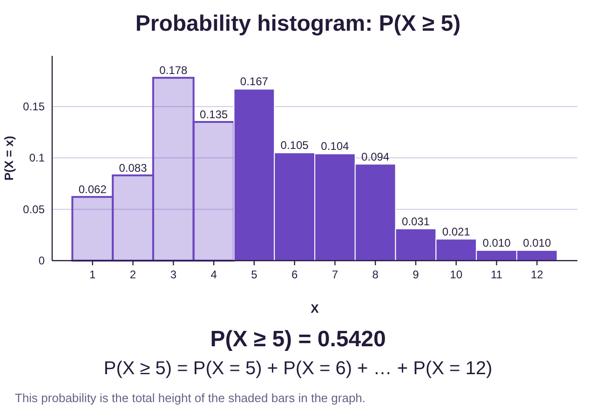
c)The likelihood he makes at least 10 shots is . Since the probability is less than 0.05, there is less than a 5% chance he will make 10 or more three point shots. If he did, it would be unusual.
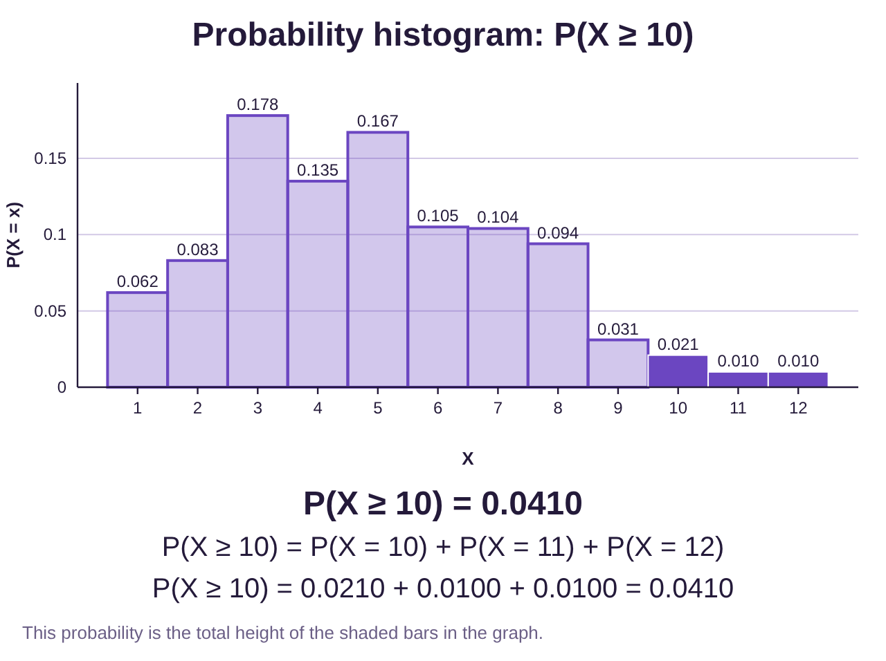
Expected Value
The expected value of a discrete random variable is another name for the mean. Basically, what you “expect” to happen is what happens “on average”, which is the mean. In gambling and insurance, if we call X the amount you can win or lose per attempt, the expected value is the amount you expect to win or lose for each attempt, on average. To calculate expected value, make a list of each possible amount that could be won or lost, and the probability of each event. The mean is the expected value!

Important Point!
Expected Value is another name for the mean. Any time you are asked what to expect, you are being asked to find the mean!
Example 11: Expected Value of a Game
In your statistics class one day, you learned that there is a 51.8% chance that you will roll at least one six if you roll 4 dice. You decide to bet your friends $5 that you will roll at least one six when you roll 4 dice. (Note: You correctly realized that the probability that you win is slightly higher than the probability that you lose, so you have an advantage. Good thinking!)
a)What is the expected value of this game to you?
b)If you repeat this bet with your friends 100 times, how much should you expect to win or lose?
Solution:First, there are only two possible outcomes to this game. You will either (1) roll at least one six and win $5, or (2) roll no six and lose $5. The probability that you win is , so using the complement, the probability that you lose is . We can organize this information in a table, shown in Table 6.
Table 6: Outcomes of 4-dice Rolling Game | ||
|---|---|---|
Outcome | X = Amount won or lost | Probability |
Roll a six and win! | 5 | 0.518 |
Don't roll a six and lose | -5 | 0.482 |
Notice that we used a negative for the amount that you lose. We interpret winning as positive and losing as negative.
a)To find the expected value, we can multiply each X by its probability, and find the sum.
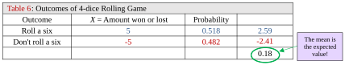
Table 6: Outcomes of 4-dice Rolling Game | |||
|---|---|---|---|
Outcome | X = Amount won or lost | Probability |
|
Roll a six | 5 | 0.518 | 2.59 |
Don't roll a six | -5 | 0.482 | -2.41 |
0.18 | |||
The mean is 0.18, which is interpreted in the following way. You should expect to win an average of $0.18 per game you play. If you prefer, you can copy the table into STATBELT and use the Custom Discrete Probability Calculator. But, with only two outcomes to multiply, it did not take much work to find the expected value by hand.
b)For 100 bets, multiply the expected value per game by the number of bets: You should expect to make about $18. Certainly not a lot for that many bets, but since the probability of winning and losing are very close, you should expect to win only slightly more often than you lose.
Example 12: Expected Value of a $10 Bet in Roulette
In roulette, a small ball is dropped into a spinning wheel and comes to rest in one of 38 spaces. The potential landing spots for the ball are numbered 1 through 36, plus 0 and 00, (for a total of 38 spaces). There are 18 red spaces, 18 black spaces, and 2 that are green (0 and 00). There are many types of bets a player can make. Find the expected value of each $10 bet explained below. Which bet has the highest expected value?
a)If a player makes a “straight up” bet, they choose one of the 38 numbers on the wheel. If the ball lands on their number, they win $350. If the ball does not land on their number, they lose $10.
b)If a player makes a “Red” bet, they are betting the ball will land in a red space. They will win $10 if the ball lands in a red space and will lose $10 if it does not.
c)If a player makes a “first dozen” bet, they are betting the ball will land on 1-12. If the ball lands on any spaced marked 1-12, they will win $20. If it does not land on 1-12, they will lose $10.
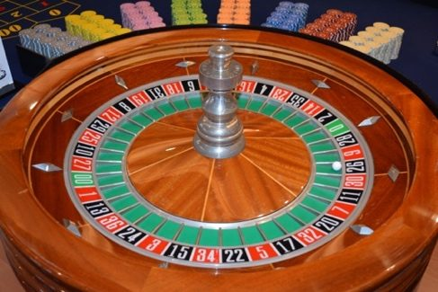
Photo by Derek Lynn (opens in a new tab) on Unsplash (opens in a new tab)
Solution:a)The “straight up” bet has a probability of winning of 1/38, and a probability of losing of 37/38. So, the expected value can be calculated by finding the mean of the discrete probability distribution in Table 7.
Table 7: Expected Value for a "straight up" bet | |||
|---|---|---|---|
Outcome | X = Amount won or lost | Probability | |
Player Wins! | 350 | 1/38 | 9.2105 |
Player Loses | -10 | 37/38 | -9.7368 |
-0.5263 | |||
Since the expected value is -0.526, the player should expect to lose about $0.53 per “straight up” bet placed.
b)The “Red” bet has a probability of winning of 18/38, and a probability of losing of 20/38. So, the expected value can be calculated by finding the mean of the discrete probability distribution in Table 8.
Table 8: Expected Value for a "Red" bet | |||
|---|---|---|---|
Outcome | X = Amount won or lost | Probability | |
Player Wins! | 10 | 18/38 | 4.7368 |
Player Loses | -10 | 20/38 | -5.2631 |
-0.5263 | |||
Since the expected value is -0.526, the player should expect to lose about $0.53 per “Red” bet placed.
c)The “First dozen” bet has a probability of winning of 12/38, and a probability of losing of 26/38. So, the expected value can be calculated by finding the mean of the discrete probability distribution in Table 9.
Table 9: Expected Value for a "First dozen" bet | |||
|---|---|---|---|
Outcome | X = Amount won or lost | Probability | |
Player Wins! | 20 | 12/38 | 6.3158 |
Player Loses | -10 | 26/38 | -6.8421 |
-0.5263 | |||
Once again, the expected value is -0.526, so the player should expect to lose about $0.53 per “First dozen” bet placed.
You may have noticed that the expected value is the same for all three bets. That means that regardless of the type of bet placed, the casino expects to make about $0.53 per bet. The player should expect to lose the same amount. If there are 1000 bets placed on a roulette table in an evening, those bets add up to about of profit for the casino. The expected value when not making a bet is zero, so your best bet is to not make a bet in a casino!
 Tip!
Tip!The best way to not lose a bet gambling is to not make the bet. All games in a casino are designed to have a negative expected value for you, meaning that you will most often lose money.
Casinos are not the only example of negative expected values. Any insurance policy is a gamble. If you need the insurance over the duration of the policy, you win the bet. If you don’t need the insurance, you lose the bet and the cost of the policy. Insurance policies generally have negative expected values, just like games in a casino. But some insurance, such as car insurance, is required by law. Other types of insurance, like home-owners insurance, is required to borrow money for a home purchase. Still others, like life or disability insurance, provide financial resources in devastating situations when you may be unable to provide for your family. Just because insurance has a negative expected value does not make it a poor decision to purchase it.
Extended warranties are another example. When you purchase an extended warranty for a car or electronic device, you are gambling that you will need it. If you don’t use the warranty, you have lost the bet (and lost the cost of the extended warranty). If you need to use the warranty, you have won the bet and win the repair or replacement cost of the item. But you should be aware that the prices of those extended warranties are set so that the expected value is negative for you, meaning that the company will expect to make money for each extended warranty sold. For that reason, extended warranties are widely considered by consumer advocates to be a poor investment. That said, there are plenty of examples of someone who benefitted from one. If you are particularly hard on watches, you might want to buy the extended warranty when you purchase a watch. But if not, it might be best to keep your money. The cost of repair is often only slightly higher than the cost of the warranty.